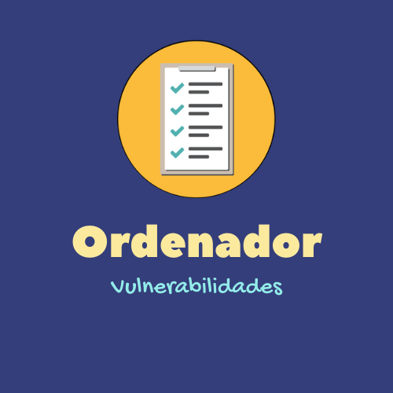

<ion-header>
  <ion-toolbar>
    <ion-title>logros-u5</ion-title>
  </ion-toolbar>
</ion-header>

<ion-content padding>

  <ion-card class="card-content2">
    
  </ion-card>

  <ion-card class="card-content2">
    
  </ion-card>

  <div style=" display: flex; align-items: center; justify-content: center;">
    <ion-card class="round-img">
      
    </ion-card>
  </div>

  <div style=" display: flex; align-items: center; justify-content: center;">
    <ion-card class="round-img">
      
    </ion-card>
  </div>

</ion-content>
